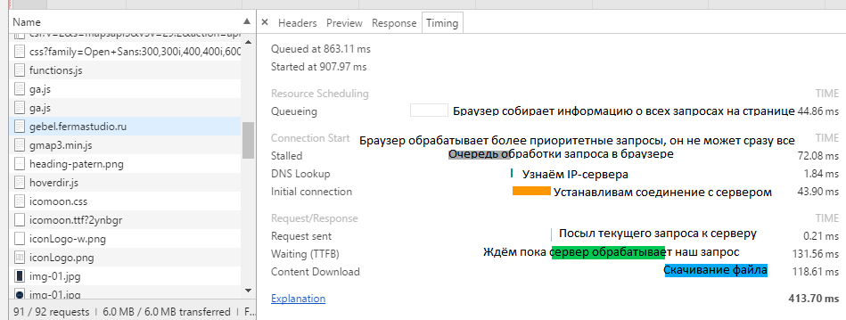

Устройство компьютера
Компьютер - это вычислительное устройство, помогает человеку выполнять какие-либо задачи.
Компьютер подобен многослойному пирогу. Каждый слой большая и обирная тема для изучения, поэтому для начала будет проще иметь общее представление о его устройстве
В основном все пользователи взаимодействуют с "верхушкой айсберга" компьютеров (с программами и ОС), даже не задумываясь что у компьютера спрятано "под капотом".
Расмотрим эти слои:
Программы и приложения (Sofware)
Компьютерный продукт с интерфейсом для выполнения каких-либо задач. То чем люди пользуются повсеместно. Принцип действия программ очень простой "ВВОД-ВЫВОД". Посылаем данные на ввод - получаем вывод.
Пишутся с помощью различных языков программирования, которые имеют понятный для человека-программиста синтаксис. После написания преобразуются в двоичный (машинный) код. То есть программы, как правило, взаимодействуют непосредственно с компьютерных железом, которое, приняв входные данные и выполнив определенные инструкции, выдаёт результат.
Компьютерные игры - это тоже программы, которые сильнее остальных программ зависят и взаимодействуют напрямую с видеокартой
Операционная система (Operation system)
По сути это тоже программа, только очень большая, которая имеет много своих встроенных программ. ОС знает о железе, которое установлено на компьютере, она как бы помогает другим программам правильно взаимодействовать с компьютерным железом.
То место, куда устанавливаются компьютерные программы. Это платформа для них. Если программы - продукты, то ос - магазин, в котором лежат эти продукты.
OC не так уж много. В наши дни стоит выделить три: Windows, GNU Linux и Mac OS.
На мобильных устройствах стоит выделить две: iOS(Mac) на iPhone и Android(Linux) на большинстве остальных.
Программы очень жестко привязаны к ОС. Программу, которую можно поставить на одну ОС, как правило, нельзя поставить на другую. То есть в каждой ОС есть своя собственная база программ. Есть программы кроссплатформенные, которые имеют версии для каждой ОС. Программы бывают с открытым исходным кодом(бесплатные) и закрытым(коммерческие).
Железо (Hardware)
Если в программах человек вводит данные и получает результат работы программы, то сама работа осуществляется компьютерным железом. Это то место, где происходят все вычислительные процессы, вся магия. Само по себе железо ничего не делает, для его работы нужны программы, которые используют ресурсы железа.
Железо состоит из:
- Материнская плата (MB) - Большая плата, на которую устанавливается или подключается все остальное железо. Имеет множество токопроводящих дорожек и портов.
- Процессор (CPU) - главное вычислительное устройство, мозг компьютера. Состоит из миллионов транзисторов.
- Оперативная память (RAM) - плата, куда загружаются данные с хранилища для выполнения задач. Сильно взаимодействует с процессором. Любая загрузка, любое ожидание - это загрузка в оперативную память. Содержит множество ячеек. Энергозависима.
- Хранилище (HDD, SSD) - диск, на котором храняться все необходимые данные, ОС, программы, файлы. Энергонезависимо.
- Графическая карта (VGA) - плата для обработки и отрисовки графических данных.
- Блок питания - питающий узел.
- Устройсва ввода - мышь, кл-ра, CD-ROM, камера, микрофон, сканер, ...
- Устройсва вывода - монитор, принтер, ...
- Корпус
Физичесие процессы
В основах работы железа лежат физические свойства и процессы.
- Электричесто и магнетизм
- Полупроводники (транзисторы)
- Двоичная система
- Логические схемы и алгоритмы
Интернет
| Узнать свой IP-адрес: | yandex.ru/internet |
| Подробная информация о местоположении: | whoer.net |

БРАУЗЕР формирует HTTP-запросы. Они, как правило, пустые, весь запрос храниться в заголовках

СЕРВЕР формирует HTTP-ответ, состоящий из гипертекста.

Визуализация запросов в DevTools
